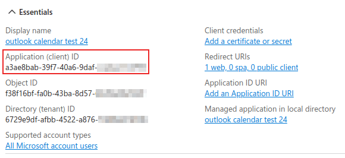
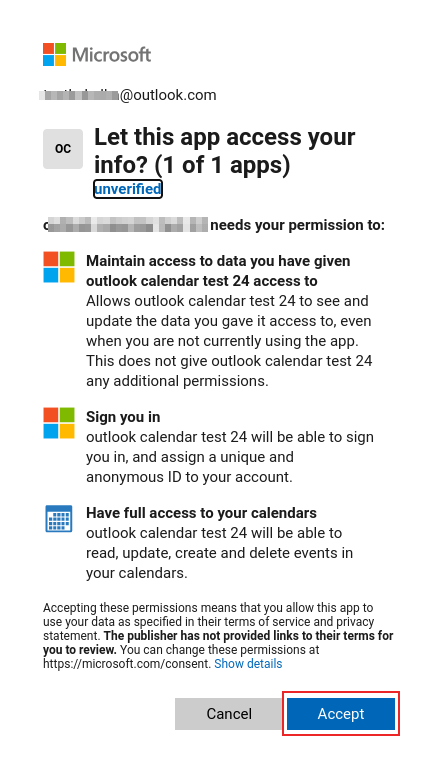
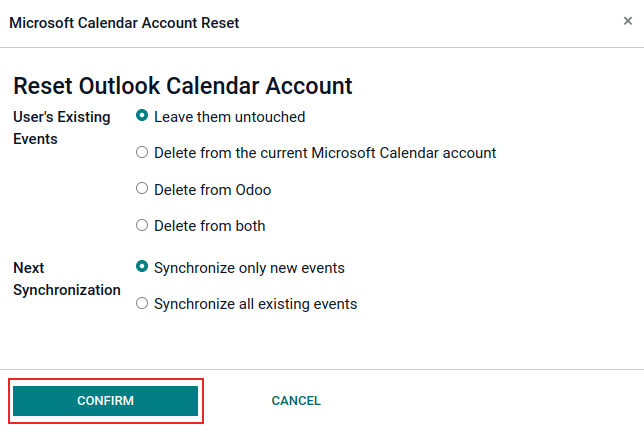

Outlook Calendar synchronization¶
Synchronizing a user’s Outlook Calendar with Odoo is useful for keeping track of tasks and appointments across all related applications.
Microsoft Azure setup¶
To sync the Outlook Calendar with Odoo’s Calendar, a Microsoft Azure account is required. Creating an account is free for users who have never tried, or paid for, Azure. For more information, view the account options on the Azure website.
Refer to Microsoft’s documentation on how to set up a Microsoft Entra ID (formally called Microsoft Azure Active Directory (Azure AD)). This is an API console to manage and register Microsoft applications.
Existing Microsoft Entra ID users should log in at the Microsoft Azure developer portal. Next, select View under the section labeled Manage Microsoft Entra ID.
Register application¶
After logging in with the Microsoft Entra ID, register an application.
To create an application, click + Add in the top menu. From the resulting drop-down menu, select App Registration.

Enter a unique Name for the connected application.
Choosing the appropriate Supported account type is essential, or else the connected application will not work. Users who wish to connect their Outlook Calendar to Odoo should select the Accounts in any organizational directory (Any Microsoft Entra ID directory - Multitenant) and personal Microsoft accounts (e.g. Skype, Xbox) option for Supported account types.
When configuring the Redirect URI, choose the Web option from the first
drop-down menu. Then, enter the Odoo database URI (URL) followed by
/microsoft_account/authentication.
Example
Enter https://yourdbname.odoo.com/microsoft_account/authentication for the Redirect
URI. Replace yourdbname.odoo.com with the URL.
Tip
Ensure the database’s URL (domain) used in the URI is the
exact same domain as the one configured on the web.base.url system parameter.
Access the web.base.url by activating developer mode, and navigating to
. Then, select it from the Key list on the System Parameters
page.

For more information on the restrictions and limitations of URIs, check Microsoft’s Redirect URI (reply URL) restrictions and limitations page.
Finally, on the application registration page, click Register button to complete the application registration. The Application (client) ID is produced. Copy this value, as it is needed later, in the Configuration in Odoo.
Create client secret¶
The second credential needed to complete the synchronization of the Microsoft Outlook Calendar is the Client Secret. The user must add a client secret, as this allows Odoo to authenticate itself, requiring no interaction from the user’s side. Certificates are optional.
To add a client secret, click in the left menu. Then click + New client secret to create the client secret.

Next, type a Description, and select when the client secret Expires. Available options include: 90 days (3 months), 365 days (12 months), 545 days (18 months), 730 days (24 months) or Custom. The Custom option allows the administrator to set a Start and End date.
Finally, click Add to Add a client secret.
Tip
Since resetting the synchronization can be tricky, Odoo recommends setting the maximum allowed expiration date for the client secret (24 months or custom), so there is no need to re-synchronize soon.
Copy the Value for use in the next section.
Warning
Client secret values cannot be viewed, except immediately after creation. Be sure to save the secret when created before leaving the page.
Configuration in Odoo¶
In the Odoo database, go to , and tick the checkbox beside the Outlook Calendar setting. Remember to click Save to implement the changes.

From the Microsoft Azure portal, under the Overview section of the application, copy the Application (Client) ID, if it has not already been copied, and paste it into the Client ID field in Odoo.

Copy the previously-acquired Value (Client Secret Value), and paste it into the Client Secret field in Odoo.

Finally, on the Odoo page, click Save.
Sync with Outlook¶
Warning
Odoo highly recommends testing the Outlook calendar synchronization on a test database and a test email address (that is not used for any other purpose) before attempting to sync the desired Outlook Calendar with the user’s production database.
If the user has any past, present, or future events on their Odoo calendar before syncing their Outlook calendar, Outlook will treat the events pulled from Odoo’s calendar during the sync as new events, causing an email notification to be sent from Outlook to all the event attendees.
To avoid unwanted emails being sent to all past, present, and future event attendees, the user must add the events from the Odoo calendar to the Outlook calendar before the first ever sync, delete the events from Odoo, and then start the sync.
Even after synchronizing the Odoo Calendar with the Outlook calendar, Outlook will still send a notification to all event participants every time an event is edited (created, deleted, unarchived, or event date/time changed), with no exceptions. This is a limitation that cannot be fixed from Odoo’s side.
In summary, once a user synchronizes their Outlook calendar with the Odoo calendar:
Creating an event in Odoo causes Outlook to send an invitation to all event attendees.
Deleting an event in Odoo causes Outlook to send a cancellation to all event attendees.
Unarchiving an event in Odoo causes Outlook to send an invitation to all event attendees.
Archiving an event in Odoo causes Outlook to send a cancellation to all event attendees.
Adding a contact to an event causes Outlook to send an invitation to all event attendees.
Removing a contact from an event causes Outlook to send a cancellation to all event attendees.
Sync Odoo Calendar and Outlook¶
In the Odoo database, open to the Calendar module, and click the Outlook sync button on the right-side of the page, beneath the monthly calendar.

The synchronization is a two-way process, meaning that events are reconciled in both accounts (Outlook and Odoo). The page redirects to a Microsoft login page, and the user is asked to log in to their account, if they are not already. Finally, grant the required permissions by clicking Accept.
Note
All users that want to use the synchronization simply need to sync their calendar with Outlook. The configuration of Microsoft’s Azure account is only done once, as Microsoft Entra ID tenants’ client IDs and client secrets are unique, and help the user manage a specific instance of Microsoft cloud services for internal and external users.
Troubleshoot sync¶
There may be times when the Microsoft Outlook Calendar account does not sync correctly with Odoo. Sync issues can be seen in the database logs.
In these cases, the account needs troubleshooting. A reset can be performed using the Reset Account button, which can be accessed by navigating to . Then, select the user to modify the calendar, and click on the Calendar tab.

Next, click Reset Account under the correct calendar.
Reset options¶
The following reset options are available for troubleshooting Microsoft Outlook Calendar sync with Odoo:
User’s Existing Events:
Leave them untouched: no changes to the events.
Delete from the current Microsoft Calendar account: delete the events from Microsoft Outlook Calendar.
Delete from Odoo: delete the events from the Odoo calendar.
Delete from both: delete the events from both Microsoft Outlook Calendar and Odoo calendar.
Next Synchronization:
Synchronize only new events: sync new events on Microsoft Outlook Calendar and/or Odoo calendar.
Synchronize all existing events: sync all events on Microsoft Outlook Calendar and/or Odoo calendar.
Click Confirm after making the selection to modify the user’s events and the calendar synchronization.